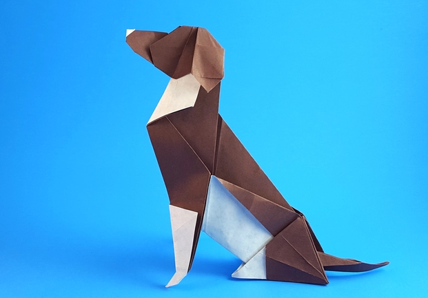
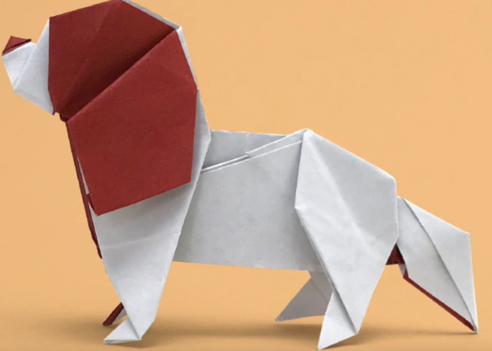
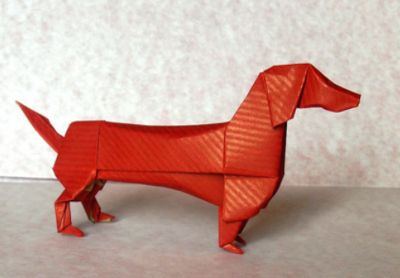

- 
The beagle is a breed of small scent hound, similar in appearance to the much larger foxhound. The beagle was developed primarily for hunting hare (beagling). Possessing a great sense of smell and superior tracking instincts, the beagle is the primary breed used as a detection dog for prohibited agricultural imports and foodstuffs in quarantine around the world. The beagle is intelligent. It is a popular pet due to its size, good temper, and a lack of inherited health problems.
- 
The Cavalier King Charles Spaniel is a small breed of spaniel classed in the toy group of The Kennel Club and the American Kennel Club that originated in the United Kingdom. Since 2000, it has grown in popularity in the United States and ranks as the 17th most popular pure-breed in the United States.
- 
The dachshund, also known as the wiener dog, badger dog, and sausage dog, is a short-legged, long-bodied, hound-type dog breed. They may be smooth-haired, wire-haired, or long-haired. The standard-sized dachshund was developed to scent, chase, and flush out badgers and other burrow-dwelling animals